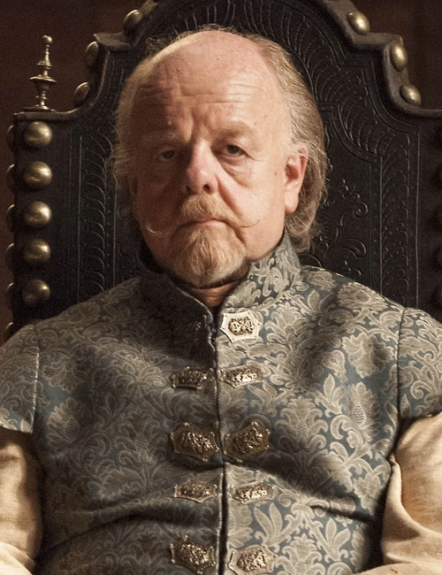

| Ruling House | Sigil |
|---|---|
| House Tyrell |
| Ruler | |
|---|---|
| Mace Tyrell, Lord Paramount of the Reach and, Warden of the South |  |
| Info | |
|---|---|
| Capital | High Garden |
| Geography | Rivers, forests, fertile plains, temperate to Mediterranean |
| Bastard Surname | "Flowers" |
| Other Notable Houses |
|
| House Tyrell | |
|---|---|
| Words | "Growing Strong" |
| Family members |
|